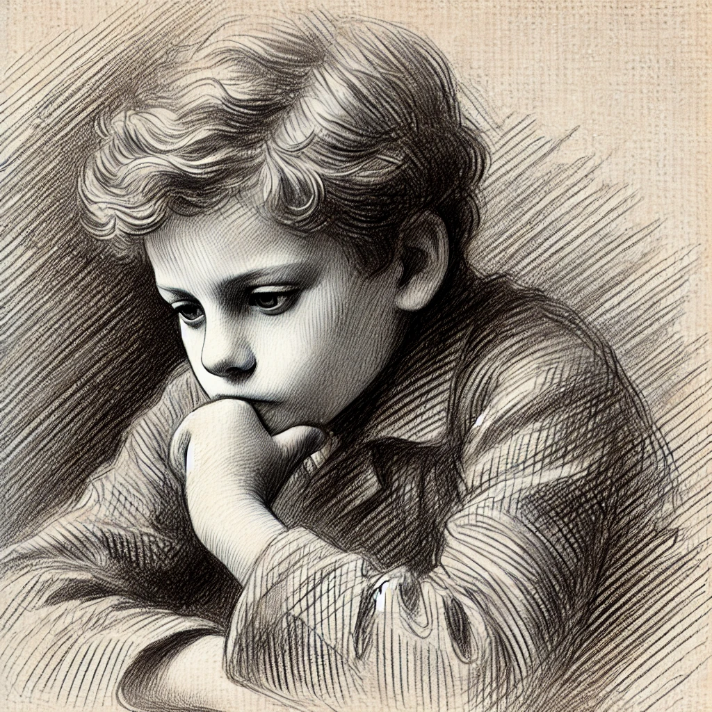

작가
헤르만 헤세
출판일
1919년
감상평에 대한 AI 그림
인간의 성장 과정의 고뇌와 다양한 감정을 잘 나타낸 책이다. 나 자신에 대해 생각해 볼 수 있는 책이다

감상평에 대한 AI평가
싱클레어는 처음에는 부모가 면접친 '밝은 세계'(선한 세계)와 '어두운 세계'(악의 세계)라는 이분법적 사고에 빠졌다고 합니다. 하지만 데미안을 만나면서 자신이 두 세계를
인간은 선과 악을 모두 만족시키고, 권한을 인정하고 조정하는 것이 적절하다는 것을 인정합니다.
감상과 성장
싱클레어는 여러 인격(데미안, 에바 부인, 피스토리우스)을 만나 점차적으로 자신의 마음을 추구하고
병합 니체의 초인 사기나 베르크의 특성화 과정과 도 연결되는 부분으로, 인간 자기 자
아브락사스의눈.
'아브락사스'는 선과 악을 초월한 존재로, 싱클레어가 존재하지 않는 가치관을 넘어서는 중요한 개념이에요.
우리가 절대적인 선이나 악에 얽매이지 않고, 모든 것을 실제로 받아들이는 것은 스스로가 필요하다는 것을 깨닫고 있습니다.
데미안의 일원
데미안은 친구가 아니라, 싱클레어의 마음적 깨달음을 이끌어내는 스승과 같습니다
마지막에는 데미안이 싱글어 내부에 존재하는 어떤 부분을 반영하는 데, 결국에는 성장 과정에서 중요한
숫자
인류의 성장소설이 아니라, 인간 뿌리에 대한 깊은 곳
연구자를 찾는 과정에서 발생하는 부분, 분류, 깨달음이 매우 섬세하게 묘사되고 있습니다.
시대를 초월해 무한한 자신의 성장 과정에서 공감할 수 있는 이야기를 하고 있기 때문에, 지
어떤 부분이 가장 깊게 이해되거나 이해되는 부분